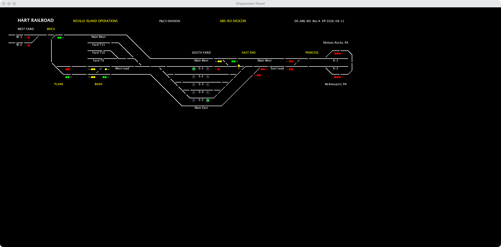
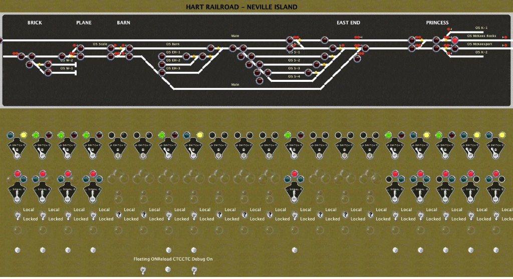

The computer in the middle
HART is run by JMRI, free and open-source software for model railroads. It keeps a list of every switch, every section of track that has an occupancy detector, and every signal. The detectors and switch motors report in over a radio network under the layout (LCOS and the Arduino bridge), so JMRI always knows which track is occupied and which way each switch is lined.
Two CTC machines
The dispatcher controls the railroad from a CTC panel on screen. HART has two of them. One is a Union Switch & Signal style lever machine, drawn in JMRI with switch levers, signal levers and code buttons. The other is a Digicon-style panel from CATS, open-source CTC software that runs on top of JMRI and is worked with a mouse. Only one is in charge at a time.


Lining a route
On the Digicon panel every home signal starts at Stop. When the dispatcher clicks a signal to send a train, the switches in the route throw and CATS releases that signal. JMRI's signal logic then looks at the track ahead and picks what to show: Clear when the way is open, Approach when the next signal is at Stop, and Stop when the block ahead is occupied or a switch is against the train.
When nobody is dispatching
Without CATS running, nothing holds the signals at Stop, and JMRI runs them as automatic block signals that follow occupancy on their own. JMRI can also run trains by itself with its Dispatcher system. That works best once every locomotive's real speed is measured, which is what speed matching is for.
Out to the lamps
Each signal head on the layout is a searchlight with a red, yellow and green LED, wired to three outputs on the nearest radio node. JMRI sends the color as a short message, the bridge passes it on by radio, and the node lights the lamp. The signal rules are still being tuned.
More: Dispatcher guides · LCOS and the Arduino bridge · Layout Explorer